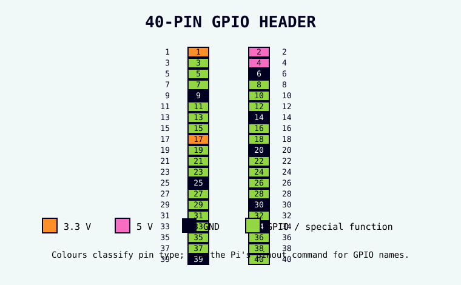

Safe, step-by-step physical computing: understand the breadboard and GPIO header, then build one output and one input without skipped steps.

Studio deck
01 · before you begin
Bring forward what you already know
This deck assumes you completed Raspberry Pi Basics first. You already know how to start the Pi, use File Manager, open Terminal, save Python in Thonny, and shut down safely.
Raspberry Pi + monitorWith keyboard and mouse.
BreadboardNo solder required.
Jumper wiresFemale-to-male wires are useful from GPIO to breadboard.
LED + 330 Ω resistorYour first output.
PushbuttonYour first input.
02 · safe habit
Power off means two things
Before changing any GPIO wiring:
Use the Raspberry Pi menu → Shutdown → Shutdown.
Wait for the Pi to finish shutting down.
Disconnect the power cable.
Only now move wires or components.
Never “hot swap” beginner GPIO circuits. Changing the wiring while the Pi is powered makes accidental shorts much easier.
03 · electricity
Three ideas are enough to begin
Voltage
The electrical push between two points. Raspberry Pi GPIO logic uses 3.3 V.
Current
The flow of electrical charge through a circuit.
Resistance
Resistance limits current. An LED needs a resistor so too much current does not flow through it.
You do not need to calculate everything yetToday, use the component values given in the lesson and learn to recognise why they are there.
04 · breadboard
What is connected inside a breadboard?
Look at your real breadboard.
Find the long centre gap.
On one side of the gap, choose a short row of five holes. Those five holes are electrically joined underneath.
Choose the matching-looking row across the centre gap. It is not joined to the first row.
Why this mattersIf two component legs go into holes that are already connected together, the circuit may not do what you expect. We will say “same row” or “different row” very deliberately.
05 · GPIO header
These pins connect software to hardware
The 40-pin header contains several kinds of pin:
3.3 V power pins.
5 V power pins.
GND (ground) pins.
GPIO pins that Python can read or control.
A 5 V pin is not a “more powerful GPIO”. Never connect 5 V directly into a GPIO input.
06 · numbering
A pin can have two useful names
Physical pin number tells you where the pin is on the 40-pin header. GPIO number is the name Python usually uses.
Example: physical pin 11 is GPIO17.
Use the Pi to check
Start the Pi if it is not already running.
Open Terminal.
Type pinout and press Enter.
Find GPIO17 in the diagram. Notice that it sits at physical pin 11.
If Terminal says pinout is not foundUse the GPIO diagram in this deck and tell your tutor. Do not install random packages just to continue.
Say it out loudA button is an input. An LED is an output. Lucky Cam's PIR will be an input.
08 · project folder
Make a GPIO practice folder
Open File Manager.
Open Home → pi-projects.
Right-click an empty area → New Folder.
Name it gpio-basics and press Enter.
Double-click it so you know the folder opens.
Where today's Python will goHome → pi-projects → gpio-basics.
09 · mini build A
Wire an LED while the Pi is unplugged
Before wiringShut the Pi down and disconnect its power cable.
Push the LED into the breadboard with its two legs in different rows. Keep track of the long leg and short leg.
Put one end of the 330 Ω resistor in the same row as the LED's long leg.
Put the other end of the resistor in a different empty row.
Connect a jumper wire from physical pin 11 (GPIO17) on the Pi to the resistor's free row.
Connect another jumper wire from the LED's short-leg row to physical pin 9 (GND).
Trace the circuit with your finger: GPIO17 → resistor → LED long leg → LED short leg → GND.
Check before powerAsk your tutor to check the first GPIO circuit you build. Once it is checked, reconnect power and let the Pi boot.
10 · gpio zero
Python gets a hardware toolbox
GPIO Zero is a Python library included with Raspberry Pi OS. A library is ready-made code you can use instead of writing every low-level hardware instruction yourself.
from gpiozero import LED
This line means: “From the GPIO Zero toolbox, give my program the LED tool.”
ImportantIn Python we will write LED(17). The 17 means GPIO17, not physical pin 17.
11 · code + save
Make gpio-led.py before you run it
Open Thonny.
Choose File → New.
Type this code:
from gpiozero import LED
from time import sleep
led = LED(17)
while True:
led.on()
sleep(1)
led.off()
sleep(1)
Choose File → Save As….
Go to Home → pi-projects → gpio-basics.
Save the file as gpio-led.py.
Only now click Run.
What should happen?The LED should turn on for about one second, off for about one second, and keep repeating.
12 · debugging
If the LED does not blink
Click Thonny's red Stop button if the program is still running.
Shut the Pi down and disconnect power.
Check the LED direction: long leg toward the resistor/GPIO side, short leg toward GND.
Check the resistor and LED really share one breadboard row.
Check the jumper to the Pi is on physical pin 11 / GPIO17.
Check the ground jumper is on a GND pin, such as physical pin 9.
Reconnect power, boot, open gpio-led.py in Thonny and Run again.
If Thonny shows an error insteadFix the code before changing the wiring. Hardware problems and Python problems are easier when you tackle one kind at a time.
13 · mini build B
Meet the pushbutton
A pushbutton is an input. When you press it, two sides become electrically connected.
Four legs, two sidesOn a common tactile button, the two legs on one side are already connected to each other. We want to use opposite sides so pressing the button changes the connection.
14 · button wiring
Replace the LED circuit with the button circuit
Before rewiringStop the LED program, shut the Pi down, and disconnect power.
Remove the LED and resistor circuit.
Place the pushbutton so it straddles the breadboard's centre gap.
Connect a jumper from physical pin 13 (GPIO27) to a row connected to one side of the button.
Connect a jumper from a row connected to the opposite side of the button to physical pin 14 (GND).
Trace it: GPIO27 → button → GND.
Have the circuit checked, then reconnect power and boot.
15 · button code
Save and run gpio-button.py
Open Thonny → File → New.
Type:
from gpiozero import Button
button = Button(27)
print("Waiting for a press...")
button.wait_for_press()
print("Button pressed")
Save it in Home → pi-projects → gpio-basics as gpio-button.py.
Click Run.
Look in the Shell: it should say Waiting for a press....
Press the physical button once.
What should happen?The Shell should add Button pressed.
16 · button debugging
If the button does nothing
Check the Shell first. If there is red error text, fix Python before touching wiring.
If Python is waiting normally, shut down and disconnect power.
Check the button really straddles the breadboard gap.
Check your two wires go to opposite sides of the button, not two legs that are already joined.
Check GPIO27 is physical pin 13 and GND is physical pin 14 (or another GND pin you deliberately chose).
Reconnect power and test again.
Debugging ruleAsk: is this a code problem, a wiring problem, or a “wrong pin” problem? Test one idea at a time.
17 · checkpoint
You now have the pattern
I know to shut down and unplug before changing GPIO wiring.
I know GPIO logic is 3.3 V and 5 V must not be fed into a GPIO input.
I know the breadboard's centre gap separates connections.
I can tell a physical pin number from a GPIO number.
I used an LED as an output.
I used a button as an input.
I know GPIO Zero gives Python friendly tools for hardware.
Next, the component guide gives names and jobs to more parts. Cat Cam then uses exactly the same input → Python → action pattern.
If you are finished for todaySave your files, shut down from the Raspberry Pi menu, then disconnect power. If you are continuing straight into another hardware build, shut down and unplug before changing the circuit.